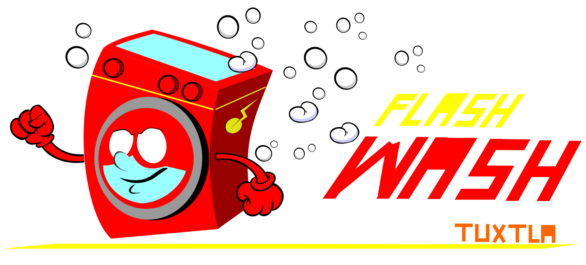
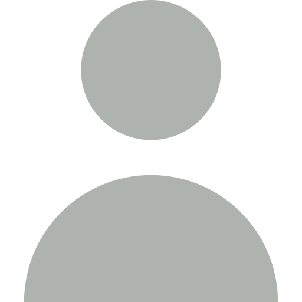
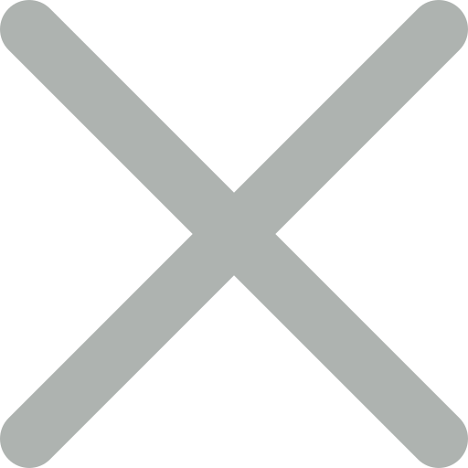

<ion-header style="z-index: 100;">
  <ion-toolbar color='primary'>
      <ion-buttons slot="start">
      <ion-button  (click)="openFirst()">
    
      <ion-icon name="menu"></ion-icon>
    </ion-button>
          
      </ion-buttons>


      


     <ion-input  placeholder="Busca una lavanderia" class="anchoDebuscador">

     </ion-input>
         
    
        
         

 

      <ion-buttons slot="end">
          <ion-button (click)=" this.efectos1.emitirMensaje()">
              
          </ion-button>

          
          <ion-button  *ngIf="this.efectos1.filActivo" (click)=" this.efectos1.ocultarFiltros()">
              
          </ion-button>


          <ion-button  *ngIf="!this.efectos1.filActivo" (click)="this.efectos1.verfiltros()">
              
          </ion-button>
          
      </ion-buttons>


  </ion-toolbar>
</ion-header>

<ion-content color=secondary>


    <ion-menu side="start" menuId="first" style="position: fixed; z-index: 100;">

      <ion-header >
          <ion-toolbar color="secondary" style="padding-bottom: 10px;">
            
           
          </ion-toolbar>

      </ion-header>
      
        <ion-content color='secondary'>
           <div *ngIf="this.global.status_de_secion" style="overflow: hidden; ">
 
            <ion-item  color='secondary'  routerLink="{{p.url}}" (click)="closeFirst()"  *ngFor="let p of paginas"  >
              
               {{p.titulo}}
            </ion-item>
           
          </div>

           
            <ion-item color='secondary'  routerLink='/login'(click)="closeFirst()" *ngIf="!this.global.status_de_secion">
                
               Iniciar sesion
            </ion-item>

            <ion-item color='secondary'  (click)="cerraSecion()" *ngIf="this.global.status_de_secion" style="cursor: pointer;">
                
               Cerrar sesion
            </ion-item>
        </ion-content>
      </ion-menu>      

  <ion-router-outlet main></ion-router-outlet>


<div style="display: flex; flex-wrap: wrap; width: 100%; padding-top: 20px;">
    
        <div class="centrar" style="width: 100%;" *ngIf="lavandrias.length==0">
          <label class="centrar">
              
              <p>Buscando lavanderias...</p>
          </label>       
        </div>
       
        


      
            <div class="lavanderiaCont" *ngFor='let dd of lavandrias'>
              <div class="contImgLavanderia centrar">
                
              </div>
              <div style="width: 75%; font-size: 13px;">
                
                
                    <h4 style="margin: 5px; color: #1089ff; font-size: 17px;">
                      {{dd.nombre}}
                    </h4> 

                   <div style="margin: 5px;">
                      <label class="statusClose" *ngFor="let service of dd.servicios">
                          {{service.servicio}} ${{service.precio}} por {{service.unidad}}
                          <br>
                        </label>

                   </div> 
                   

                  
                  <ion-button color='medium' class="botonVermas"
                  (click)="irALavanderia(dd.id)"
                  >Ver más</ion-button>        
              </div>
             
             
            </div>
      
            
            
          
      
      
</div>
        


<div class="filtroscontent" id="filtros">
 
 <div class="fonton1"  (click)="this.efectos1.ocultarFiltros()" >
    

 </div>   
 
 <div class="fondo2">
    <ion-label style="color:gold;">Filtros de busqueda:</ion-label>
    
    
    <ion-item color=success *ngFor='let fil of filtros' >

        <ion-checkbox style="margin: 5px;"
        (click)="this.efectos1.activaFiltro(fil)"
        color="danger"
        ></ion-checkbox>
            {{fil.opcion}}
           
       
      </ion-item>
   

    <div class="opciones" style="z-index: 90;">
      <ion-button style="margin-right:90px; "
      (click)="this.efectos1.ocultarFiltros()">
      Cancelar
    </ion-button>
      <ion-button color="danger"
      (click)="this.efectos1.ocultarFiltros()"
      >Buscar</ion-button>
    </div>

  </div>  
    
</div>
       

</ion-content>
